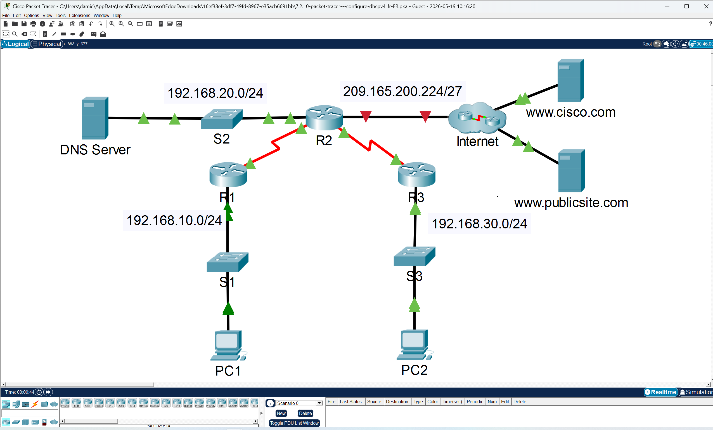
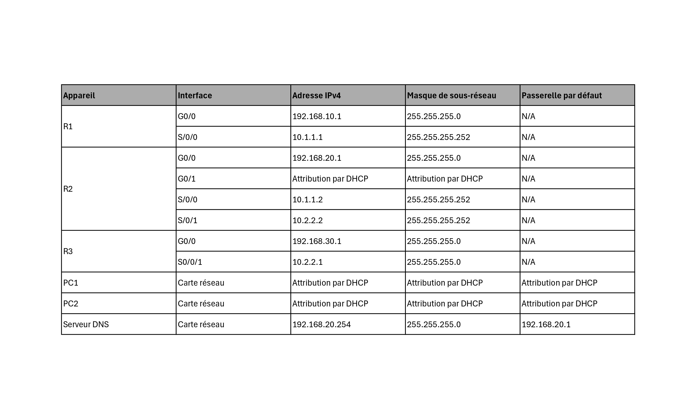
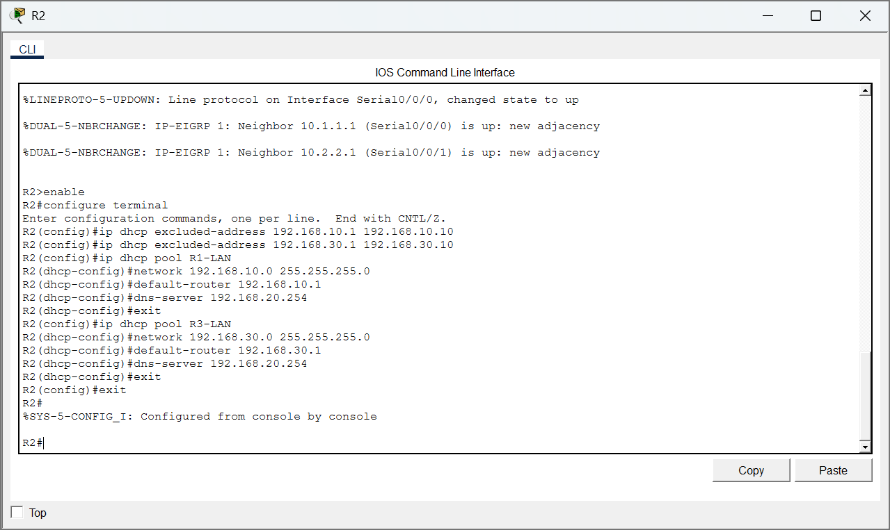
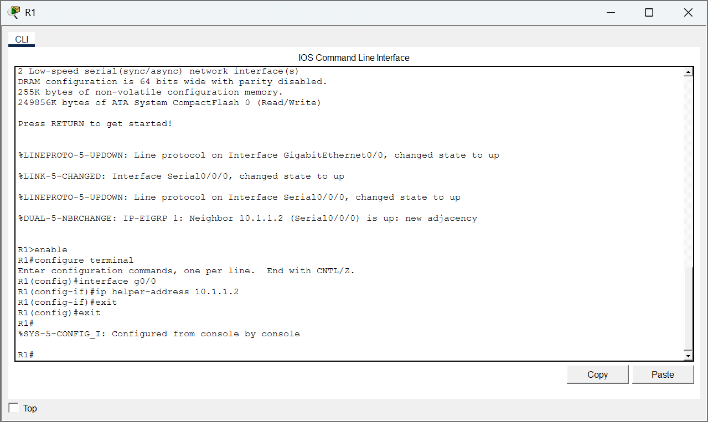
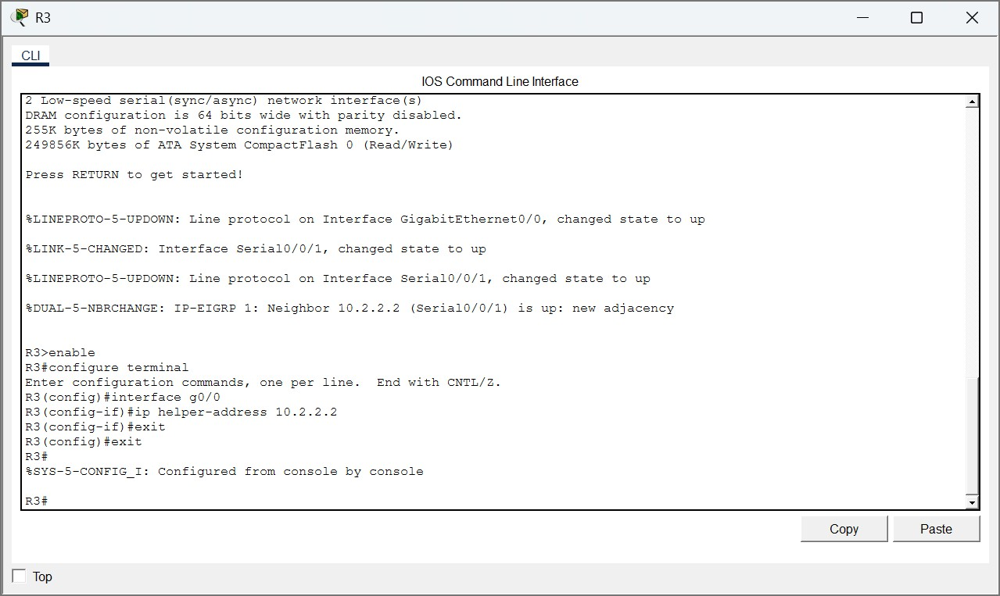
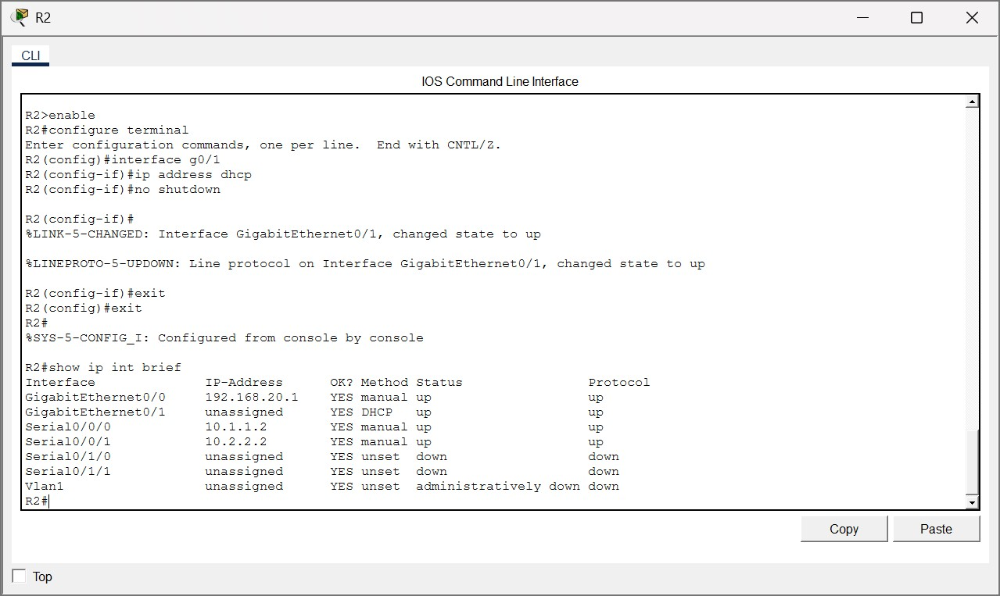
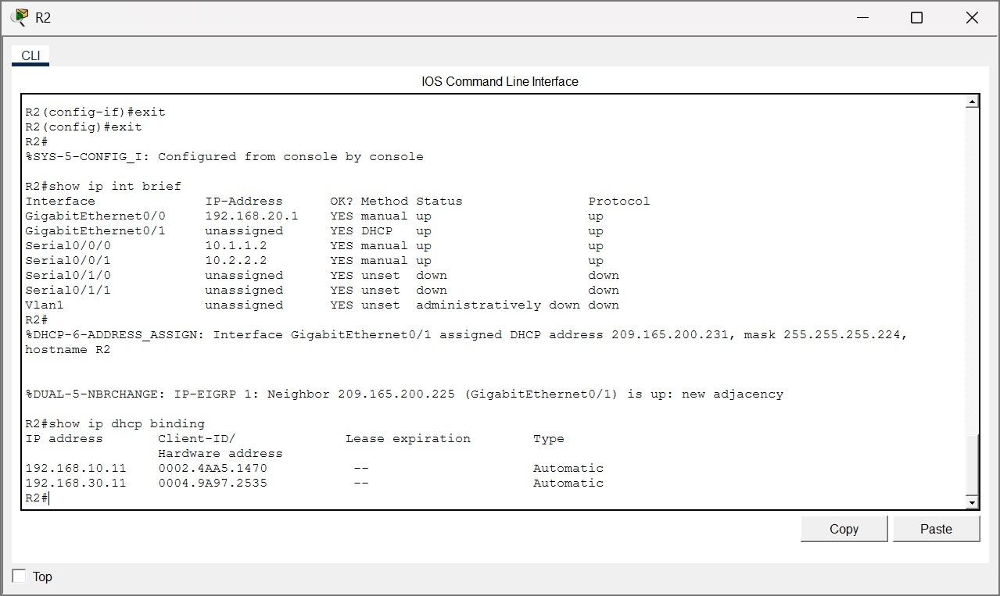
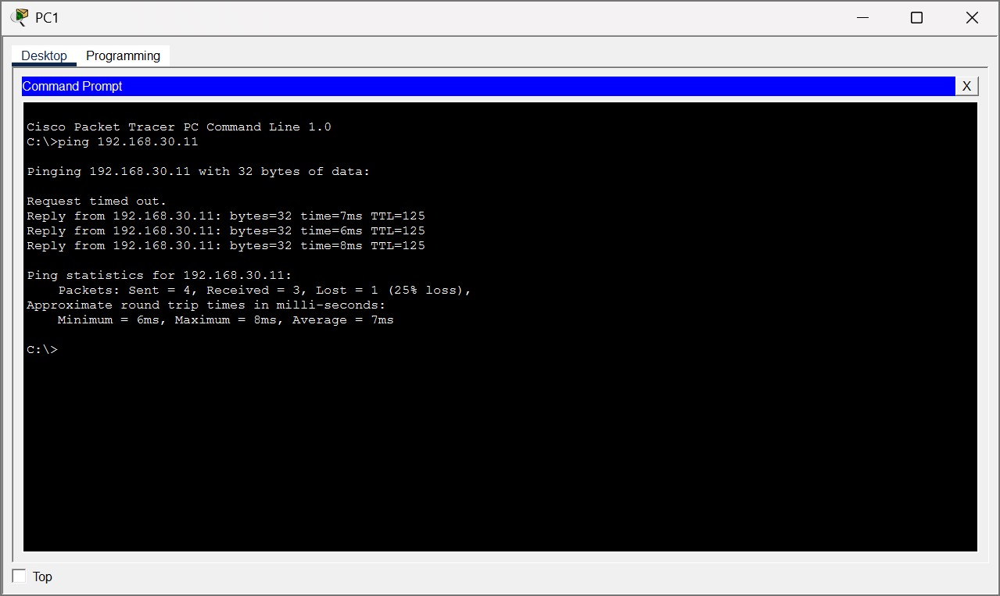
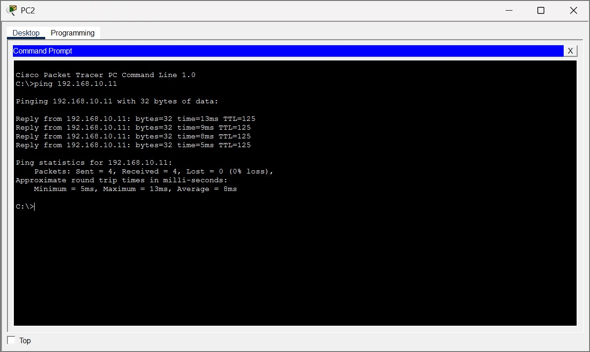

Présentation
Configuration d’un serveur DHCPv4, de relais DHCP et d’une interface cliente DHCP dans une topologie Cisco.

Configuration d’un serveur DHCPv4, de relais DHCP et d’une interface cliente DHCP dans une topologie Cisco.
Les captures ci-dessous constituent les éléments de preuve associés à la réalisation. Elles sont conservées dans le dépôt afin de documenter la démarche et les résultats.











Ce TP m’a permis de comprendre le rôle central de DHCP pour simplifier l’administration des postes clients.